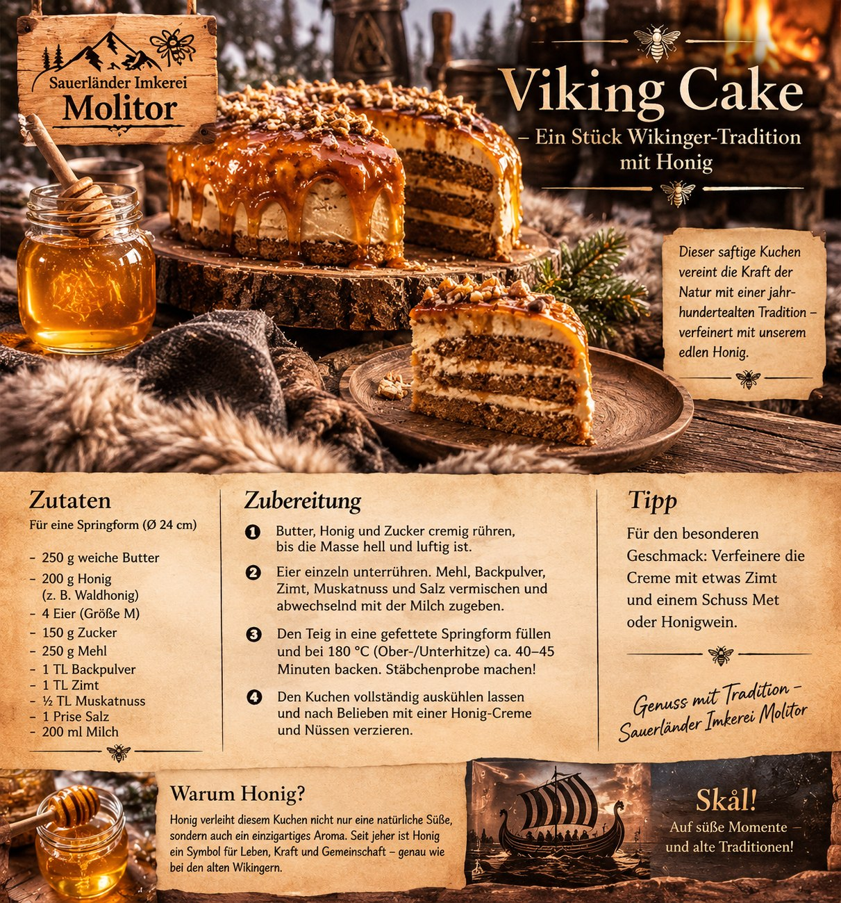

Ratgeber · Rezept
Viking Cake – Ein Stück Wikinger-Tradition mit Honig
Dieser saftige Kuchen vereint die Kraft der Natur mit einer jahrhundertealten Tradition – verfeinert mit unserem edlen Honig.

Rezept als Text lesen
Zutaten
Für eine Springform (Ø 24 cm):
- 250 g weiche Butter
- 200 g Honig (z. B. Waldhonig)
- 4 Eier (Größe M)
- 150 g Zucker
- 250 g Mehl
- 1 TL Backpulver
- 1 TL Zimt
- ½ TL Muskatnuss
- 1 Prise Salz
- 200 ml Milch
Zubereitung
- Butter, Honig und Zucker cremig rühren, bis die Masse hell und luftig ist.
- Eier einzeln unterrühren. Mehl, Backpulver, Zimt, Muskatnuss und Salz vermischen und abwechselnd mit der Milch zugeben.
- Den Teig in eine gefettete Springform füllen und bei 180 °C (Ober-/Unterhitze) ca. 40–45 Minuten backen. Stäbchenprobe machen!
- Den Kuchen vollständig auskühlen lassen und nach Belieben mit einer Honig-Creme und Nüssen verzieren.
Tipp
Für den besonderen Geschmack: Verfeinere die Creme mit etwas Zimt und einem Schuss Met oder Honigwein.
Warum Honig?
Honig verleiht diesem Kuchen nicht nur eine natürliche Süße, sondern auch ein einzigartiges Aroma. Seit jeher ist Honig ein Symbol für Leben, Kraft und Gemeinschaft – genau wie bei den alten Wikingern.
Skål! Auf süße Momente – und alte Traditionen!